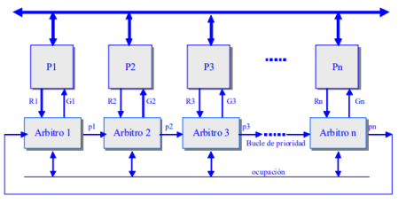

Unidad 4 Procesamiento Paralelo.
4.1 Aspectos Básicos de la computación paralela
La computación paralela es una forma de cómputo en la que muchas
instrucciones se ejecutan simultáneamente, operando sobre el
principio de que problemas grandes, a menudo se pueden dividir en
unos más pequeños, que luego son resueltos simultáneamente (en
paralelo). Hay varias formas diferentes de computación paralela:
paralelismo a nivel de bit, paralelismo a nivel de instrucción,
paralelismo de datos y paralelismo de tareas. El paralelismo se ha
empleado durante muchos años, sobre todo en la computación de
altas prestaciones, pero el interés en ella ha crecido últimamente
debido a las limitaciones físicas que impiden el aumento de la
frecuencia. Como el consumo de energía y por consiguiente la
generación de calor de las computadoras constituye una
preocupación en los últimos años, la computación en paralelo se ha
convertido en el paradigma dominante en la arquitectura de
computadores, principalmente en forma de procesadores
multinúcleo.
Los programas informáticos paralelos son más difíciles de escribir
que los secuenciales, porque la concurrencia introduce nuevos tipos
de errores de software, siendo las condiciones de carrera los más
comunes. La comunicación y sincronización entre diferentes
subtareas son algunos de los mayores obstáculos para obtener un
buen rendimiento del programa paralelo. La máxima aceleración
posible de un programa como resultado de la paralelización se
conoce como la ley de Amdahl.
Ley de Amdahl y ley de Gustafson
Idealmente, la aceleración a partir de la paralelización es lineal,
doblar el número de elementos de procesamiento debe reducir a la
mitad el tiempo de ejecución y doblarlo por segunda vez debe
nuevamente reducir el tiempo a la mitad. Sin embargo, muy pocos
algoritmos paralelos logran una aceleración óptima. La mayoría
tienen una aceleración casi lineal para un pequeño número de
elementos de procesamiento, y pasa a ser constante para un gran
número de elementos de procesamiento.
La aceleración potencial de un algoritmo en una plataforma de
cómputo en paralelo está dada por la ley de Amdahl, formulada
originalmente por Gene Amdahl en la década de 1960. Esta señala
que una pequeña porción del programa que no pueda paralelizarse
va a limitar la aceleración que se logra con la paralelización.
La ley de Gustafson es otra ley en computación que está en estrecha
relación con la ley de Amdahl. Ambas leyes asumen que el tiempo
de funcionamiento de la parte secuencial del programa es
independiente del número de procesadores. La ley de Amdahl
supone que todo el problema es de tamaño fijo, por lo que la
cantidad total de trabajo que se hará en paralelo también es
independiente del número de procesadores, mientras que la ley de
Gustafson supone que la cantidad total de trabajo que se hará en
paralelo varía linealmente con el número de procesadores.
Dependencias.
Entender la dependencia de datos es fundamental en la
implementación de algoritmos paralelos. Ningún programa puede
ejecutar más rápidamente que la cadena más larga de cálculos
dependientes (conocida como la ruta crítica), ya que los cálculos que
dependen de cálculos previos en la cadena deben ejecutarse en
orden. Sin embargo, la mayoría de los algoritmos no consisten sólo
de una larga cadena de cálculos dependientes; generalmente hay
oportunidades para ejecutar cálculos independientes en paralelo.

Una violación de la primera condición introduce una dependencia de
flujo, correspondiente al primer segmento que produce un resultado
utilizado por el segundo segmento. La segunda condición representa
una anti-dependencia, cuando el segundo segmento (Pj) produce una
variable que necesita el primer segmento (Pi).
Condiciones de carrera, exclusión mutua, sincronización, y
desaceleración paralela.
Las subtareas en un programa paralelo a menudo son llamadas hilos.
Algunas arquitecturas de computación paralela utilizan versiones
más pequeñas y ligeras de hilos conocidas como hebras, mientras
que otros utilizan versiones más grandes conocidos como procesos.
Sin embargo, «hilos» es generalmente aceptado como un término
genérico para las subtareas. Los hilos a menudo tendrán que
actualizar algunas variables que se comparten entre ellos. Las
instrucciones entre los dos programas pueden entrelazarse en
cualquier orden.
Las aplicaciones a menudo se clasifican según la frecuencia con que
sus subtareas se sincronizan o comunican entre sí. Una aplicación
muestra un paralelismo de grano fino si sus subtareas deben
comunicase muchas veces por segundo, se considera paralelismo de
grano grueso si no se comunican muchas veces por segundo, y es
vergonzosamente paralelo si nunca o casi nunca se tienen que
comunicar.
Grado de paralelismo:
Muy grueso: Programas.
Grueso: Subprogramas, tareas.
Fino: Instrucción.
Muy fino: Fases de instrucción.
Modelos de consistencia.
Los lenguajes de programación en paralelo y computadoras paralelas
deben tener un modelo de consistencia de datos también conocido
como un modelo de memoria.
El modelo de consistencia define reglas para las operaciones en la
memoria del ordenador y cómo se producen los resultados.
Uno de los primeros modelos de consistencia fue el modelo de
consistencia secuencial de Leslie Lamport. La consistencia
secuencial es la propiedad de un programa en la que su ejecución en
paralelo produce los mismos resultados que un programa secuencial.
Single Instruction, Single Data (SISD).
Hay un elemento de procesamiento, que tiene acceso a un único
programa y a un almacenamiento de datos. En cada paso, el
elemento de procesamiento carga una instrucción y la información
correspondiente y ejecuta esta instrucción. El resultado es guardado
de vuelta en el almacenamiento de datos. Luego SISD es el
computador secuencial convencional, de acuerdo al modelo de von
Neumann.
Multiple Instruction, Single Data (MISD).
Hay múltiples elementos de procesamiento, en el que cada cual tiene
memoria privada del programa, pero se tiene acceso común a una
memoria global de información. En cada paso, cada elemento de
procesamiento de obtiene la misma información de la memoria y
carga una instrucción de la memoria privada del programa.
Este modelo es muy restrictivo y no se ha usado en ningún computador de tipo comercial.
Single Instruction, Multiple Data (SIMD).
Hay múltiples elementos de procesamiento, en el que cada cual tiene
acceso privado a la memoria de información (compartida o
distribuida). Sin embargo, hay una sola memoria de programa, desde
la cual una unidad de procesamiento especial obtiene y despacha
instrucciones. En cada paso, cada unidad de procesamiento obtiene
la misma instrucción y carga desde su memoria privada un elemento
de información y ejecuta esta instrucción en dicho elemento.
Para aplicaciones con un grado significante de
paralelismo de información, este acercamiento puede ser muy
eficiente.
Multiple Instruction, Multiple Data (MIMD).
Hay múltiples unidades de procesamiento, en la cual cada una tiene
tanto instrucciones como información separada. Cada elemento
ejecuta una instrucción distinta en un elemento de información
distinto. Los elementos de proceso trabajan asíncronamente. Los
clusters son ejemplo son ejemplos del modelo MIMD.
4.2 Tipos de computación paralela
Paralelismo a nivel de bit.
Desde el advenimiento de la integración a gran escala (VLSI) como
tecnología de fabricación de chips de computadora en la década de
1970 hasta alrededor de 1986, la aceleración en la arquitectura de
computadores se lograba en gran medida duplicando el tamaño de la
palabra en la computadora, la cantidad de información que el
procesador puede manejar por ciclo.
Históricamente, los microprocesadores de 4 bits fueron sustituidos
por unos de 8 bits, luego de 16 bits y 32 bits, esta tendencia general
llegó a su fin con la introducción de procesadores de 64 bits, lo que
ha sido un estándar en la computación de propósito general durante
la última década.
Paralelismo a nivel de instrucción.
Los procesadores modernos tienen ''pipeline'' de instrucciones de
varias etapas. Cada etapa en el pipeline corresponde a una acción
diferente que el procesador realiza en la instrucción correspondiente
a la etapa; un procesador con un pipeline de N etapas puede tener
hasta n instrucciones diferentes en diferentes etapas de finalización.
Además del paralelismo a nivel de instrucción del pipelining,
algunos procesadores pueden ejecutar más de una instrucción a la
vez. Estos son conocidos como procesadores superescalares. Las
instrucciones pueden agruparse juntas sólo si no hay dependencia de
datos entre ellas.
Paralelismo de datos.
El paralelismo de datos es el paralelismo inherente en programas
con ciclos, que se centra en la distribución de los datos entre los
diferentes nodos computacionales que deben tratarse en paralelo.
Muchas de las aplicaciones científicas y de ingeniería
muestran paralelismo de datos.
Una dependencia de terminación de ciclo es la dependencia de una
iteración de un ciclo en la salida de una o más iteraciones anteriores.
Las dependencias de terminación de ciclo evitan la paralelización de
ciclos.
Paralelismo de tareas.
Es un paradigma de la programación
concurrente que consiste en asignar distintas tareas a cada uno de los
procesadores de un sistema de cómputo. En consecuencia, cada
procesador efectuará su propia secuencia de operaciones.
En su modo más general, el paralelismo de tareas se representa
mediante un grafo de tareas, el cual es subdividido en subgrafos que
son luego asignados a diferentes procesadores.
4.2.1 Clasificación.
Las computadoras paralelas se pueden clasificar de acuerdo con el
nivel en el que el hardware soporta paralelismo. Esta clasificación es
análoga a la distancia entre los nodos básicos de cómputo.
-Computación multinúcleo: un procesador multinúcleo es un
procesador que incluye múltiples unidades de ejecución
(núcleos) en el mismo chip.
-Multiprocesamiento simétrico: un multiprocesador simétrico
(SMP) es un sistema computacional con múltiples
procesadores idénticos que comparten memoria y se conectan
a través de un bus.
-Computación en clúster: un clúster es un grupo de
ordenadores débilmente acoplados que trabajan en estrecha
colaboración, de modo que en algunos aspectos pueden
considerarse como un solo equipo.
-Procesamiento paralelo masivo: tienden a ser más grandes
que los clústeres, con «mucho más» de 100 procesadores.
-Computación distribuida: la computación distribuida es la
forma más distribuida de la computación paralela. Se hace uso
de ordenadores que se comunican a través de la Internet para
trabajar en un problema dado.
-Computadoras paralelas especializadas: Aunque no son específicos
para un dominio, tienden a ser aplicables sólo a unas pocas
clases de problemas paralelos.
-Cómputo reconfigurable con arreglos de compuertas
programables: el cómputo reconfigurable es el uso de un
arreglo de compuertas programables (FPGA) como
coprocesador de un ordenador de propósito general.
-Cómputo de propósito general en unidades de
procesamiento gráfico (GPGPU): es una tendencia
relativamente reciente en la investigación de ingeniería
informática. Los GPUs son co-procesadores que han sido
fuertemente optimizados para procesamiento de gráficos por
computadora.
-Circuitos integrados de aplicación específica: debido a que
un ASIC (por definición) es específico para una aplicación
dada, puede ser completamente optimizado para esa
aplicación.
-Procesadores vectoriales: pueden ejecutar la misma
instrucción en grandes conjuntos de datos.
4.2.2 Arquitectura de computadores secuenciales.
A diferencia de los sistemas combinacionales, en los sistemas
secuenciales, los valores de las salidas, en un momento dado, no
dependen exclusivamente de los valores de las entradas en dicho
momento, sino también dependen del estado anterior o estado
interno.
El sistema secuencial requiere de la utilización de un dispositivo de
memoria que pueda almacenar la historia pasada de sus entradas
(denominadas variables de estado) y le permita mantener su estado
durante algún tiempo, estos dispositivos de memoria pueden ser
sencillos como un simple retardador o celdas de memoria de tipo
DRAM, SRAM o multivibradores biestables también conocido
como Flip-Flop.
Tipos de sistemas secuenciales
En este tipo de circuitos entra un factor que no se había considerado
en los circuitos combinacionales, dicho factor es el tiempo, según
como manejan el tiempo se pueden clasificar en: circuitos
secuenciales síncronos y circuitos secuenciales asíncronos.
Circuitos secuenciales asíncronos.
En circuitos secuenciales asíncronos los cambios de estados ocurren
al ritmo natural asociado a las compuertas lógicas utilizadas en su
implementación, lo que produce retardos en cascadas entre los
biestables del circuito, es decir no utilizan elementos especiales de
memoria, lo que puede ocasionar algunos problemas de
funcionamiento, ya que estos retardos naturales no están bajo el
control del diseñador y además no son idénticos en cada compuerta
lógica.
Circuitos secuenciales síncronos.
Los circuitos secuenciales síncronos solo permiten un cambio de
estado en los instantes marcados o autorizados por una señal de
sincronismo de tipo oscilatorio denominada reloj (cristal o circuito
capaz de producir una serie de pulsos regulares en el tiempo), lo que
soluciona los problemas que tienen los circuitos asíncronos
originados por cambios de estado no uniformes dentro del sistema o
circuito.
4.2.3 Organización de direcciones de memoria
La memoria principal en un ordenador en paralelo puede ser
compartida —compartida entre todos los elementos de
procesamiento en un único espacio de direcciones—, o distribuida
—cada elemento de procesamiento tiene su propio espacio local de
direcciones—.El término memoria distribuida se refiere al hecho de
que la memoria se distribuye lógicamente, pero a menudo implica
que también se distribuyen físicamente.
Los accesos a la memoria local suelen ser más rápidos que los
accesos a memoria no local.
Las arquitecturas de ordenador en las que cada elemento de la
memoria principal se puede acceder con igual latencia y ancho de
banda son conocidas como arquitecturas de acceso uniforme a
memoria (UMA).
Un sistema que no tiene esta propiedad se conoce como
arquitectura de acceso a memoria no uniforme (NUMA). Los
sistemas de memoria distribuidos tienen acceso no uniforme a la
memoria.
4.3 Sistemas de memoria compartida (multiprocesadores)
-Todos los procesadores acceden a una memoria común.
-La comunicación entre procesadores se hace a través de la
memoria.
-Se necesitan primitivas de sincronismo para asegurar el
intercambio de datos.
Estructura de los multiprocesadores de memoria compartida.
La mayoría de los multiprocesadores comerciales son del tipo UMA
(Uniform Memory Access): todos los procesadores tienen igual
tiempo de acceso a la memoria compartida. En la arquitectura UMA
los procesadores se conectan a la memoria a través de un bus, una
red multietapa o un conmutador de barras cruzadas (crossbar crossbar)y disponen de su propia memoria caché.
Los procesadores tipo NUMA (Non Uniform Memory Access) presentan
tiempos de acceso a la memoria compartida que dependen de la
ubicación del elemento de proceso y la memoria.
4.3.1 Redes de interconexión dinámica (indirecta).
Medio compartido.
Conexión por bus compartido.
Es la organización más común en los computadores personales y
servidores.
El bus consta de líneas de dirección, datos y control para
implementar:
-El protocolo de transferencias de datos con la memoria.
-El arbitraje del acceso al bus cuando más de un procesador
compite por utilizarlo.
Los procesadores utilizan cachés locales para:
-Reducir el tiempo medio de acceso a memoria, como en un
monoprocesador.
-Disminuir la utilización del bus compartido.
Protocolos de transferencia de ciclo partido.
La operación de lectura se divide en dos transacciones no continuas
de acceso al bus. La primera es de petición de lectura que realiza el
máster (procesador) sobre el slave (memoria). Cuando el slave dispone del dato
leído, inicia un ciclo de bus actuando como máster para enviar el
dato al antiguo máster, que ahora actúa como slave.
Protocolo de arbitraje distribuido
La responsabilidad del arbitraje se distribuye por los diferentes
procesadores conectados al bus.

Arbitro-i concede el bus al procesador Pi activando Gi si:
1. Pi ha activado su línea de petición de bus Ri.
2. La línea de ocupación está desactivada.
3. La línea de entrada de prioridad pi-1 está activada.
El árbitro i activa su línea de prioridad pi si:
1. Pi no ha activado su línea de petición Ri.
2. La línea de prioridad pi-1 está activa.
3. Finaliza una operación de acceso al bus.
Conmutadas.
Conexión por conmutadores crossbar.
Cada procesador (Pi) y cada módulo de memoria (Mi) tienen su
propio bus. Existe un conmutador (S) en los puntos de intersección
que permite conectar un bus de memoria con un bus de procesador.
Para evitar conflictos cuando más de un procesador pretende acceder
al mismo módulo de memoria se establece un orden de prioridad.
Conexión por red multietapa.
- Representan una alternativa intermedia de conexión entre el
bus y el crossbar.
- Es de menor complejidad que el crossbar pero mayor que el
bus simple.
- La conectividad es mayor que la del bus simple pero menor
que la del crossbar.
- Se compone de varias etapas alternativas de conmutadores
simples y redes de interconexión.
4.4 Sistemas de memoria distribuida (multicomputadores)
Cada procesador tiene su propia memoria y la comunicación se
realiza por intercambio explícito de mensajes a través de una red.
Ventajas
- El número de nodos puede ir desde algunas decenas hasta
varios miles (o más).
- La arquitectura de paso de mensajes tiene ventajas sobre la de
memoria compartida cuando el número de procesadores es
grande.
- El número de canales físicos entre nodos suele oscilar entre
cuatro y ocho.
- Esta arquitectura es directamente escalable y presenta un bajo
coste para sistemas grandes.
- Un problema se especifica como un conjunto de procesos que
se comunican entre sí y que se hacen corresponder sobre la
estructura física de procesadores.
Desventajas
- Se necesitan técnicas de sincronización para acceder a las
variables compartidas.
- La contención en la memoria puede reducir significativamente
la velocidad.
- No son fácilmente escalables a un gran número de
procesadores.
4.4.1 Redes de interconexión estáticas
Los multicomputadores utilizan redes estáticas con enlaces directos
entre nodos. Cuando un nodo recibe un mensaje lo procesa si viene
dirigido a dicho nodo. Si el mensaje no va dirigido al nodo receptor
lo reenvía a otro por alguno de sus enlaces de salida siguiendo un
protocolo de encaminamiento.
Propiedades más significativas
- Topología de la red: determina el patrón de interconexión
entre nodos.
- Diámetro de la red: distancia máxima de los caminos más
cortos entre dos nodos de la red.
- Latencia: retardo de tiempo en el peor caso para un mensaje
transferido a través de la red.
- Ancho de banda: Transferencia máxima de datos en
Mbytes/segundo.
- Escalabilidad: posibilidad de expansión modular de la red.
- Grado de un nodo: número de enlaces o canales que inciden
en el nodo.
- Algoritmo de encaminamiento: determina el camino que
debe seguir un mensaje desde el nodo emisor al nodo receptor.
4.5 Casos para estudio
Por numerosos motivos, el procesamiento distribuido se ha
convertido en un área de gran importancia e interés dentro de la
ciencia de la computación, produciendo profundas transformaciones
en las líneas de investigación y desarrollo.
Interesa realizar investigación en la especificación, transformación,
optimización y evaluación de algoritmos distribuidos y paralelos.
Esto incluye el diseño y desarrollo de sistemas paralelos, la
transformación de algoritmos secuenciales en paralelos, y las
métricas de evaluación de performance sobre distintas plataformas
de soporte (hardware y software). Más allá de las mejoras constantes
en las arquitecturas físicas de soporte, uno de los mayores desafíos
se centra en cómo aprovechar al máximo la potencia de las mismas.
Líneas de investigación y desarrollo
- Paralelización de algoritmos secuenciales. Diseño y
optimización de algoritmos.
- Arquitecturas multicore y multithreading en multicore.
- Modelos de representación y predicción de performance de
algoritmos paralelos.
- Mapping y scheduling de aplicaciones paralelas sobre distintas
arquitecturas multiprocesador.
- Métricas del paralelismo. Speedup, eficiencia, rendimiento,
granularidad, superlinealidad.
- Balance de carga estático y dinámico. Técnicas de balanceo de
carga.
- Análisis de los problemas de migración y asignación óptima de
procesos y datos a procesadores.
- Patrones de diseño de algoritmos paralelos
.
- Escalabilidad de algoritmos paralelos en arquitecturas
multiprocesador distribuidas.
- Implementación de soluciones sobre diferentes modelos de
arquitectura homogéneas y heterogéneas.
- Laboratorios remotos para el acceso transparente a recursos de
cómputo paralelo.
Algunas Implementaciones con procesamiento paralelo.
NVIDIA
Capa física (physical layer):
- GPU PhysX.
- CPU PhysX.
Capa de gráficos (graphics layer):
- GPU DirectX Windows.
Intel
Capa física (physical layer):
- No GPU PhysX.
- CPU Havok.
Capa de gráficos (graphics layer):
- GPU DirectX Windows.
AMD
Capa física (physical layer):
- No GPU PhysX.
- CPU Havok.
Capa de gráficos (graphics layer):
- GPU DirectX Windows.
- 4.1 Aspectos Básicos de la computación paralela
- 4.2 Tipos de computación paralela
- 4.2.1 Clasificación.
- 4.2.2 Arquitectura de computadores secuenciales.
- 4.2.3 Organización de direcciones de memoria
- 4.3 Sistemas de memoria compartida (multiprocesadores)
- 4.3.1 Redes de interconexión dinámica (indirecta).
- Medio Comparatvo
- Conmutadas
- 4.4 Sistemas de memoria distribuida (multicomputadores)
- 4.4.1 Redes de interconexión estáticas
- 4.5 Casos para estudio
UNIDAD 4 Procesamiento Paralelo